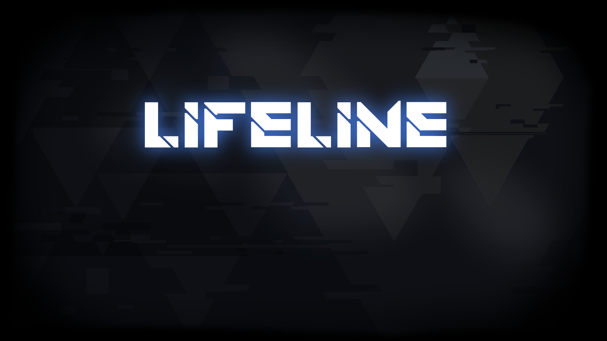
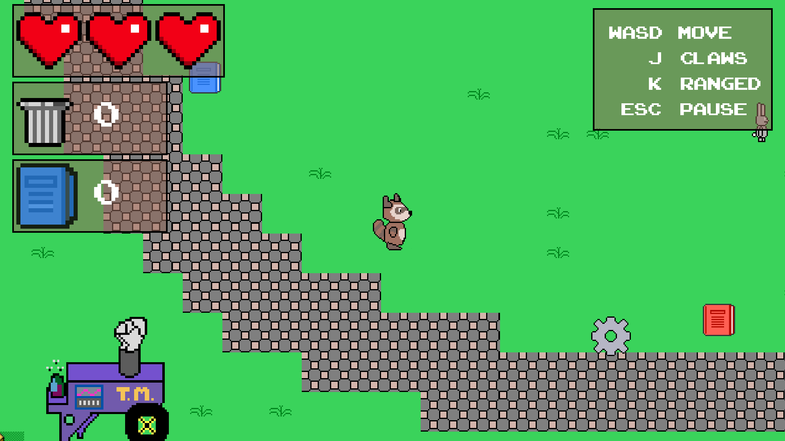
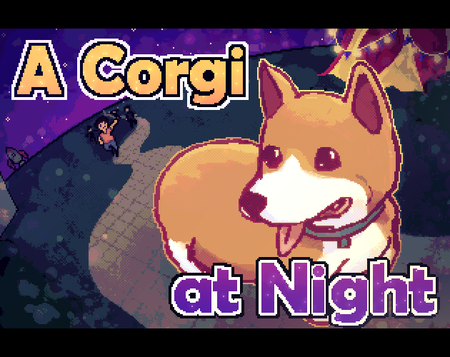
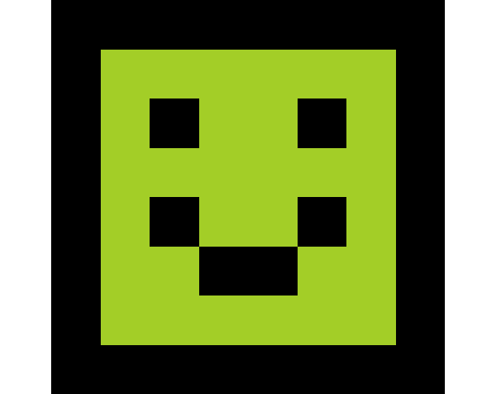
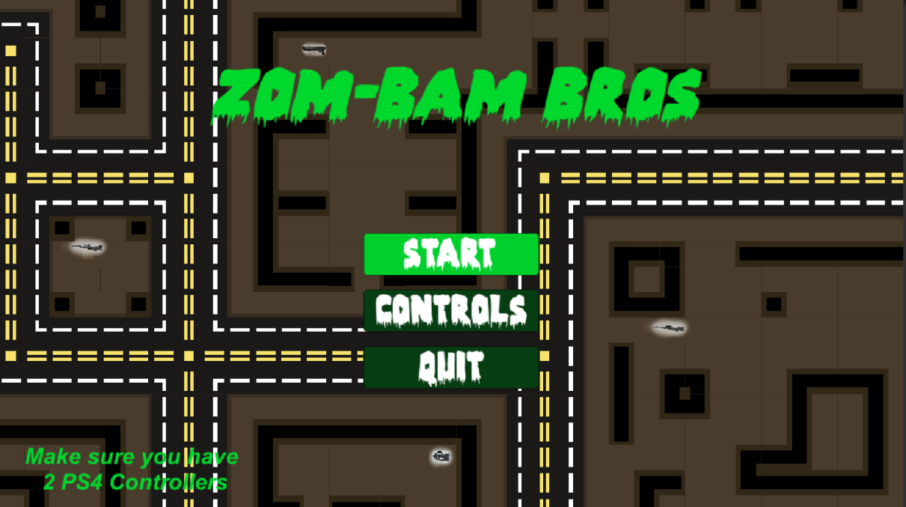
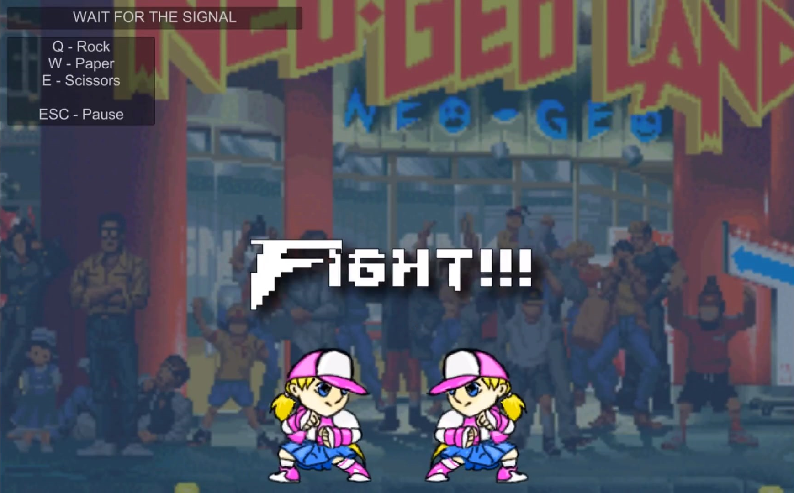
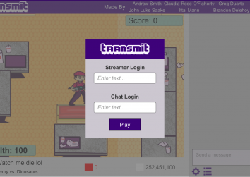
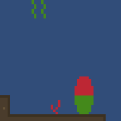
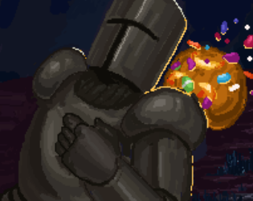

Gameography
Lifeline
January 25-27, 2019
Collaboration with Ulises Perez, Naz Hartoonian, Kyle Kissler, Mayan Shoshani, Yasemin Aydın, Taylor Poppoff, and Angela Li for the Global Game Jam 2019. Lifeline is a visual novel made from from scratch in Unity, inspired by Detroit: Become Human. I contributed an action theme, a quiet theme, and Undertale-inspired dialogue sound effects. You can download a build from its entry on the Global Game Jam website, linked above.

Trash Matters
December 10, 2018
Collaboration with Mayan Shoshani, Tomas Zazueta, John Luke Saake, and Ulises Perez for CS113 [Computer Game Development]. I did a lot of programming in Godot/GDScript (Python) for the game's UI and player controller. I also created all audio assets including player actions, enemy actions, and an ambient background.

A Corgi At Night
April 2018 - October 2018
Collaboration with Ulises Perez, Naz Hartoonian, Angela Li, Rachel Lee, and Victoria Barinova. I wrote two level songs, one credits song, and did all the sound design for the introduction movie. Download it for Windows by clicking on our good boi Quinn above!

Buddy
September 2, 2018
Collaboration with Kyle Kissler for the Game Maker's Toolkit Game Jam 2018. The concept is simple: a stealth game where the objective is to attract as much attention to yourself as possible. I helped design the main gameplay concept and constructed the main level, as well as provided some small sound effects and art assets. You can play it by clicking on Buddy above.

Zom Bam Bros
March 15, 2018
Collaboration with Ittai Mann, Andrew Smith, and John Luke Saake - the third and final game for ICS161 [Game Engine Lab]. Players are placed in a top-down, zombie-infested city and are forced to fight off the hordes, and eventually, each other. I wrote 2 songs, created all the sound effects, and assisted with level design.

Punch Kick Super
February 28, 2018
Collaboration with Juwin Viray for ICS161 [Game Engine Lab]. A combination of Rock, Paper, Scissors and the classic Quick Draw games themed around fighting games. I wrote the main theme, created all sound effects, and did most of the programming in Unity/C# (a highlight being nested coroutines implemented as random countdown timers).

DinoStream
January 26-28, 2018
Collaboration with Andrew Smith, Claudia Rose O'Flaherty, Ittai Mann, Diego Guzman, Greg Duarte, and John Luke Saake for the Global Game Jam 2018. This one was a fruitful experiment in asynchronous design, where the game is played by two players but they're doing completely different things: one controls a character in a top-down shooter game, the other uses a Twitch-esque chat box to affect the gameplay of the other player.
I wrote the level theme and recorded lots of gross sounds for the enemy dinosaurs. You can download a build from its entry on the Global Game Jam website, linked above.

Reef
January 25, 2018
A simple 2D ocean exploration game, made in about one week for my first piece of ICS161 [Game Engine Lab] coursework. My very first foray into solo Unity/C# development. You can play it by clicking its name above. Some parts might look strange in-browser, so I recommend downloading it instead:
Win | Mac

Forest Runner
October 27-29, 2017
Collaboration with Justin Lee, Jason Mehroziad, Timothy Quach, and Brenda Rendon - an aptly titled infinite runner made for the UCI Video Game Development Club's Fall 2017 "Proto" Game Jam. I helped brainstorm the main design the game and contributed the music and all sound effects. You can download it by clicking on the knight above!